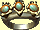

Èapky, amulety, prsteny, opasky, hùlky
Èapky, klobouky, koruny (Zpìt na obsah)
| Jméno: | Látkový klobouk | |
| Obyèejný klobouk. Materiál je smìsí bavlny a vlny, a péro je z kachny. | ||
| Cena: | 20 | |
| Jméno: | Ozdobný klobouk | |
| Docela módní a stylový, tyto klobouky jsou populární mezi horními tøídami a tìmi sna¾ícími se je napodobovat. | ||
| Cena: | 100 | |
| Jméno: | Èarodìjova èapka | |
| Nesmìjte se --i kdy¾ vypadá hloupì, skoro smì¹nì-- mnozí èarodìjové stráví docela dost èasu oèarováváním kloboukù, jako je tento, mocnou magií. Kónický tvar a 'oèi' v pøední èásti upoutávají pozornost bytostí z astrálního svìta, a tato vlastnost usnadòuje oèarování klobouku. | ||
| Cena: | 200 | |
| Jméno: | Koruna | |
| Toto je uboze tepaná koruna, druh, který mohou vytvoøit goblini nebo nízkorozpoètoví herci, aby karikovali královskou dùstojnost. Nenabízí ¾ádnou skuteènou ochranu, aèkoliv mù¾e nést nìjaké malé oèarování. | ||
| Cena: | 250 | |
 |
Jméno: | Vznosná koruna |
| Do støedu této køehké støíbrné koruny je vsazen velký, kazový safír. Extrémnì jemnì znaky kladiva naznaèují, ¾e tato koruna byla vyrobena trpaslièíma rukama. | ||
| Cena: | 450 | |
 |
Jméno: | V¹emocná koruna |
| Koruny tohoto druhu jsou typicky vytvoøeny s pou¾itím magie. Pokud je nalezena nìjaká bez jakéhokoli oèarování, byla pravdìpodobnì z nìjakého dùvodu zanechána nedokonèena. | ||
| Cena: | 650 | |
Opasky (Zpìt na obsah)
 |
Jméno: | Ko¾ený opasek |
| Kus kù¾e uèený k tomu, aby vám dr¾el spodky. | ||
| Cena: | 40 | |
| Jméno: | ®oldnéøùv opasek | |
| ©iroký ko¾ený pásek s velkou, lacinou pøezkou druhy, který mají v oblibì bandité a kupci. Jak kupci, tak i bandité, na nich mají, jako pomoc do bitvy, rádi zaklínadla nebo men¹í kouzla. | ||
| Cena: | 100 | |
| Jméno: | Avantgardní opasek | |
| Vydìlaná draèí kù¾e a nale¹tìný bronz jsou k sobì pøipevnìny, aby utvoøili pásek neobvyklé síly a magické odolnosti. Pøesto¾e se s nimi ¹patnì pracuje, tyto pásky mohou nabídnout excelentní ochranu proti magii, jakmile je do nich úspì¹nì vlo¾eno oèarování. | ||
| Cena: | 225 | |
| Jméno: | Opasek pána války | |
| Vyrobeno ze støíbra a kù¾e nìjaké neznámé nestvùry, tento pásek je okován vertikálními prou¾ky zkaleného zlata. Pøezka je jeden velký opál zasazený do platinové základny. | ||
| Cena: | 450 | |
| Jméno: | Svrchovaný opasek | |
| Pøesto¾e mìkký a poddajný, materiál tohoto pásku je vyroben z extrémnì jemných vláken bílého zlata. Bílé zlato je spleteno dohromady zpùsobem pøíli¹ pøesným na lidské ruce, a rubín zasazený do pøezky byl perfektnì uøíznut zpùsobem dávno ztraceným v èase. | ||
| Cena: | 600 | |
Prsteny (Zpìt na obsah)
| Jméno: | Hezký prsten | |
| Malý zlatý prsten se èvrtkarátovým diamantem. Styl je jednoduchý a elegantní. | ||
| Cena: | 100 | |
| Jméno: | Tøpytivý prsten | |
| Tento jednoduchý platinový prsten zdobí dva ametysty. | ||
| Cena: | 300 | |
| Jméno: | Lunární prsten | |
| Zlatý prsten s velkým mìsíèním kamenem usazeným ve støedu. Tyto prsteny vìt¹inou nesou nìjaké oèarování. | ||
| Cena: | 500 | |
| Jméno: | Èarodìjný prsten | |
| Prsteny jako tento byly no¹eny Èarodìjnou gildou k oznaèení èlenství bìhem jejich rozkvìtu v letech 550-800 P.T. | ||
| Cena: | 700 | |
 |
Jméno: | Po¾ehnaný prsten |
| Na prstenu vás na první pohled upoutají tøi perly, pøipevnìné na zlatý základ, které se, kdy¾ je dr¾íte proti slunci, tøpytí slabou modøí. | ||
| Cena: | 900 | |
| Jméno: | Cenný prsten | |
| Velký hvìzdicový safír lemovaný dvìma men¹ími rubíny zdobí jinak jednoduchý zlatý pás. | ||
| Cena: | 1100 | |
| Jméno: | Vzácný prsten | |
| Tøi drahokamy, symetricky stejné co do velikosti i kvality zdobí kovaný zlatý pás. Prostøední drahokam je rubín, a dva lemující drahokamy jsou purpurové topazy. | ||
| Cena: | 1300 | |
 |
Jméno: | Éterický prsten |
| Kovaný prsten z bílého zlata s velkým centrálním diamantem a dvìma malými perlami, svìtlo na nìj nedopadá normálnì. Prsten se bly¹tí a pohasíná nepøedvídatelnì, jako by byl osvìtlován nìjakým neviditelným sluncem svítícím v neviditelném, paralelním svìtì. | ||
| Cena: | 1500 | |
|  | Jméno: | Nádherný prsten |
| Tøi opály obroubené podivným rudým kovem jsou zasazeny do perfektního prstenu ze staltu--velmi vzácného kovu vyskytujícího se jen v ji¾ní Erathii. | ||
| Cena: | 1700 | |
 |
Jméno: | Skarabeùv prsten |
| Zlatá obruè zdobená krovkami vzácného brouka vyskytujícího se pouze v pou¹tích Enrothu. Správnì zpracované nìjakým alchymistou, tyto krovky mohou být upraveny, aby nesly nejmocnìj¹í kouzla. | ||
| Cena: | 2000 | |
Amulety (Zpìt na obsah)
| Jméno: | Tyrkysový amulet | |
| Tyrkysový kámen podpíraný bronzovým øetìzem a sponou tvoøí levný, pøesto okouzlující amulet. | ||
| Cena: | 500 | |
| Jméno: | Gotický amulet | |
| Tento podivný amulet byl pravdìpodobnì vytvoøen nìjakým alchymistou. Tvar a symetrie pomáhají udr¾et jakékoli kouzlo, které do nìj vlo¾il. | ||
| Cena: | 750 | |
| Jméno: | Paøátový amulet | |
| Do zkostnatìlé nohy nìjaké neznámé ¹elmy nebo stvùry byl vsazen velký, kazový purpurový topaz. Není to pìkné, ale urèitì to je magické. | ||
| Cena: | 1000 | |
| Jméno: | Starobylý amulet | |
| Tento amulet je slo¾en ze dvou èástí: v pøední èásti je starobylý, perfektnì vyøezaný ze silného, neposkvrnìného kovu. Rub je mnohem novìj¹í zlatý øetìz a spona. Peèlivá prohlídka pøedního èásti odhaluje, ¾e to je plaketa zobrazující jméno nìjakého dlouho mrtvého vojáka nebo dìlníka. Symboly vpøedu zøejmì znaèí postavení a hodnost. | ||
| Cena: | 1250 | |
 |
Jméno: | Rubínový amulet |
| Èistý rubín vybrou¹ený do tvaru hvìzdy a obklopený zlatou sponou dávají tomuto amuletu jeho jméno. Kdy¾ se na nìj dívá v ¹eru, lze ve støedu drahokamu vidìt planoucí a tanèící jiskru. | ||
| Cena: | 1500 | |
Hùlky (Zpìt na obsah)
| Jméno: | Hùlka ohnì | |
| Tyèka z modrého kovu a døeva s modrým kamenem na vrcholu. K pou¾ití musíte hùlku uchopit, jako byste uchopili zbraò. | ||
| Cena: | 1000 | |
| Jméno: | Hùlka statické elektøiny | |
| Tyèka z modrého kovu a døeva s modrým kamenem na vrcholu. K pou¾ití musíte hùlku uchopit, jako byste uchopili zbraò. | ||
| Cena: | 1000 | |
| Jméno: | Hùlka mrazu | |
| Tyèka z modrého kovu a døeva s modrým kamenem na vrcholu. K pou¾ití musíte hùlku uchopit, jako byste uchopili zbraò. | ||
| Cena: | 1000 | |
| Jméno: | Hùlka omraèování | |
| Tyèka z modrého kovu a døeva s modrým kamenem na vrcholu. K pou¾ití musíte hùlku uchopit, jako byste uchopili zbraò. | ||
| Cena: | 1000 | |
| Jméno: | Hùlka ¹ípù | |
| Tyèka z modrého kovu a døeva s modrým kamenem na vrcholu. K pou¾ití musíte hùlku uchopit, jako byste uchopili zbraò. | ||
| Cena: | 1000 | |
| Jméno: | Èarovná hùlka ohnì | |
| Spí¹e hùl ne¾ hùlka, tato èarovná hùlka je nevysvìtlitelnì stále ¾ivá, i kdy¾ byla ze stromu odøíznuta pøed mnoha lety. K pou¾ití musíte hùlku uchopit, jako byste uchopili zbraò. | ||
| Cena: | 1500 | |
| Jméno: | Èarovná hùlka jisker | |
| Spí¹e hùl ne¾ hùlka, tato èarovná hùlka je nevysvìtlitelnì stále ¾ivá, i kdy¾ byla ze stromu odøíznuta pøed mnoha lety. K pou¾ití musíte hùlku uchopit, jako byste uchopili zbraò. | ||
| Cena: | 1500 | |
| Jméno: | Èarovná hùlka jedu | |
| Spí¹e hùl ne¾ hùlka, tato èarovná hùlka je nevysvìtlitelnì stále ¾ivá, i kdy¾ byla ze stromu odøíznuta pøed mnoha lety. K pou¾ití musíte hùlku uchopit, jako byste uchopili zbraò. | ||
| Cena: | 1500 | |
| Jméno: | Èarovná hùlka Mysli | |
| Spí¹e hùl ne¾ hùlka, tato èarovná hùlka je nevysvìtlitelnì stále ¾ivá, i kdy¾ byla ze stromu odøíznuta pøed mnoha lety. K pou¾ití musíte hùlku uchopit, jako byste uchopili zbraò. | ||
| Cena: | 1500 | |
| Jméno: | Èarovná hùlka zraòování | |
| Spí¹e hùl ne¾ hùlka, tato èarovná hùlka je nevysvìtlitelnì stále ¾ivá, i kdy¾ byla ze stromu odøíznuta pøed mnoha lety. K pou¾ití musíte hùlku uchopit, jako byste uchopili zbraò. | ||
| Cena: | 1500 | |
| Jméno: | Alakornová hùlka Ohnivých koulí | |
| Vyrobená z vydlabaného rohu jednoro¾ce a nabodnutá na kus uhlazeného døeva, hùlky jako tato jsou zrozeny z krutosti a zla. Kouzlo, které obsahuje, je u¾iteèné; jediná otázka je, zda vìøí¹, ¾e tvoje vìc ospravedlòuje pou¾ití pøedmìtu tak hanebnì vytvoøeného. K pou¾ití musíte hùlku uchopit, jako byste uchopili zbraò. | ||
| Cena: | 2000 | |
| Jméno: | Alakornová hùlka Ledu | |
| Vyrobená z vydlabaného rohu jednoro¾ce a nabodnutá na kus uhlazeného døeva, hùlky jako tato jsou zrozeny z krutosti a zla. Kouzlo, které obsahuje je u¾iteèné; jediná otázka je, zda vìøí¹, ¾e tvoje vìc ospravedlòuje pou¾ití pøedmìtu tak hanebnì vytvoøeného. K pou¾ití musíte hùlku uchopit, jako byste uchopili zbraò. | ||
| Cena: | 2000 | |
| Jméno: | Alakornová hùlka Roje | |
| Vyrobená z vydlabaného rohu jednoro¾ce a nabodnutá na kus uhlazeného døeva, hùlky jako tato jsou zrozeny z krutosti a zla. Kouzlo, které obsahuje je u¾iteèné; jediná otázka je, zda vìøí¹, ¾e tvoje vìc ospravedlòuje pou¾ití pøedmìtu tak hanebnì vytvoøeného. K pou¾ití musíte hùlku uchopit, jako byste uchopili zbraò. | ||
| Cena: | 2000 | |
| Jméno: | Alakornová hùlka Èepelí | |
| Vyrobená z vydlabaného rohu jednoro¾ce a nabodnutá na kus uhlazeného døeva, hùlky jako tato jsou zrozeny z krutosti a zla. Kouzlo, které obsahuje je u¾iteèné; jediná otázka je, zda vìøí¹, ¾e tvoje vìc ospravedlòuje pou¾ití pøedmìtu tak hanebnì vytvoøeného. K pou¾ití musíte hùlku uchopit, jako byste uchopili zbraò. | ||
| Cena: | 2000 | |
| Jméno: | Alakornová hùlka Zakletí | |
| Vyrobená z vydlabaného rohu jednoro¾ce a nabodnutá na kus uhlazeného døeva, hùlky jako tato jsou zrozeny z krutosti a zla. Kouzlo, které obsahuje je u¾iteèné; jediná otázka je, zda vìøí¹, ¾e tvoje vìc ospravedlòuje pou¾ití pøedmìtu tak hanebnì vytvoøeného. K pou¾ití musíte hùlku uchopit, jako byste uchopili zbraò. | ||
| Cena: | 2000 | |
| Jméno: | Magická hùlka Výbuchù | |
| Vyrobená z èervenavého kovu, bazili¹èí vejce pøpevnìné k pracovnímu konci zavr¹uje hùlku obsahující mocné kouzlo. K pou¾ití musíte hùlku uchopit, jako byste uchopili zbraò. | ||
| Cena: | 2500 | |
| Jméno: | Magická hùlka Bleskù | |
| Vyrobená z èervenavého kovu, bazili¹èí vejce pøipevnìné k pracovnímu konci zavr¹uje hùlku obsahující mocné kouzlo. K pou¾ití musíte hùlku uchopit, jako byste uchopili zbraò. | ||
| Cena: | 2500 | |
| Jméno: | Magická hùlka Kamenù | |
| Vyrobená z èervenavého kovu, bazili¹èí vejce pøipevnìné k pracovnímu konci zavr¹uje hùlku obsahující mocné kouzlo. K pou¾ití musíte hùlku uchopit, jako byste uchopili zbraò. | ||
| Cena: | 2500 | |
| Jméno: | Magická hùlka Paralýzy | |
| Vyrobená z èervenavého kovu, bazili¹èí vejce pøipevnìné k pracovnímu konci zavr¹uje hùlku obsahující mocné kouzlo. K pou¾ití musíte hùlku uchopit, jako byste uchopili zbraò. | ||
| Cena: | 2500 | |
| Jméno: | Magická hùlka Mraèen | |
| Vyrobená z èervenavého kovu, bazili¹èí vejce pøipevnìné k pracovnímu konci zavr¹uje hùlku obsahující mocné kouzlo. K pou¾ití musíte hùlku uchopit, jako byste uchopili zbraò. | ||
| Cena: | 2500 | |
 |
Jméno: | Mystická hùlka Imploze |
| Vytvoøená z pøední tlapy mládìte draka opatøené drápy, hùlky jako tato mohou nést nejsilnìj¹í kouzla. K pou¾ití musíte hùlku uchopit, jako byste uchopili zbraò. | ||
| Cena: | 3000 | |
|
Jméno: | Mystická hùlka Pokøivení |
| Vytvoøená z pøední tlapy mládìte draka opatøené drápy, hùlky jako tato mohou nést nejsilnìj¹í kouzla. K pou¾ití musíte hùlku uchopit, jako byste uchopili zbraò. | ||
| Cena: | 3000 | |
|
Jméno: | Mystická hùlka Støepin |
| Vytvoøená z pøední tlapy mládìte draka opatøené drápy, hùlky jako tato mohou nést nejsilnìj¹í kouzla. K pou¾ití musíte hùlku uchopit, jako byste uchopili zbraò. | ||
| Cena: | 3000 | |
|
Jméno: | Mystická hùlka Smr¹»ování |
| Vytvoøená z pøední tlapy mládìte draka opatøené drápy, hùlky jako tato mohou nést nejsilnìj¹í kouzla. K pou¾ití musíte hùlku uchopit, jako byste uchopili zbraò. | ||
| Cena: | 3000 | |
|
Jméno: | Mystická hùlka Smrti |
| Vytvoøená z pøední tlapy mládìte draka opatøené drápy, hùlky jako tato mohou nést nejsilnìj¹í kouzla. K pou¾ití musíte hùlku uchopit, jako byste uchopili zbraò. | ||
| Cena: | 3000 | |
copyright 2002 - 2022 by Petr 'Elemir' Levák v¹echna práva vyhrazena